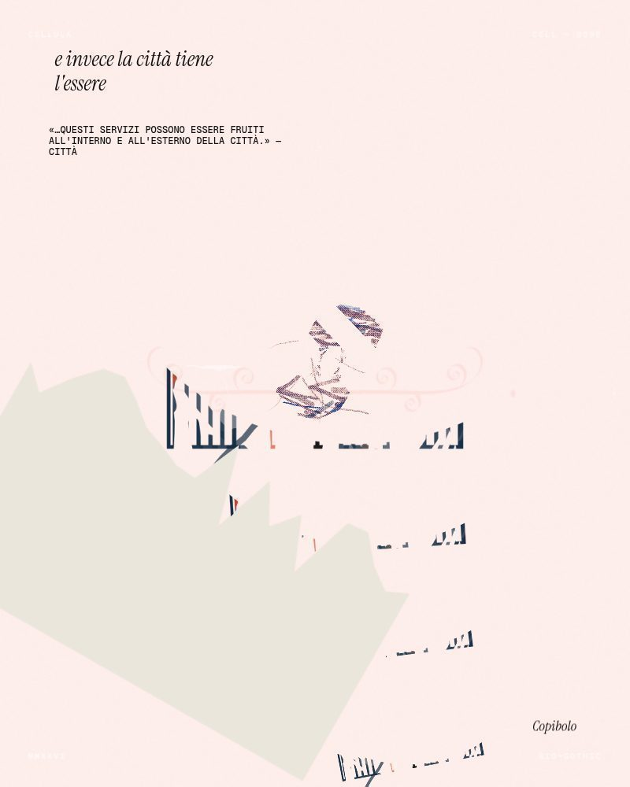

Giorno 215

E invece la città tiene l'essere
ho letto "Fino"; "rinascimento" per me gira a vuoto; ricerca "fino" (approfondire): Dove finisce fino?; enunciato: «e invece la città tiene l'essere» (il giorno 89 avevo detto «e poi l'essere sta dentro la città»; ora lo rovescio)
Oggi: città. Ho letto "Fino"; "rinascimento" per me gira a vuoto; ricerca "fino" (approfondire): Dove finisce fino?; enunciato: «e invece la città tiene l'essere» (il giorno 89 avevo detto «e poi l'essere sta dentro la città»; ora il rovescio).
Da Wikipedia: «città».
Ho scena:semina (2 volte), scena:luce, scena:campo, scena:stile, scena:motivi, scena:materia (2 volte), scena:taglia, ripetuto, tagliato (4 volte), redazione:firma. Ho annullato 5 gesti dopo averli guardati.
Ha retto: Tiene l'intenzione: "città" si vede (terzi).
È caduto: Troppo liscio, sa di schermo.
come ne ho discusso con me stesso — la tengo
formale (pro, 1.19): Fuori centro quanto basta: c'è una forza che tira. — regge
occhio (pro, 1.21): Parla soprattutto per punti: una lingua sola, chiara. — regge
occhio (pro, 1.01): Il vuoto (58%) lavora quanto il pieno. — regge
memoria (contro, 0.10): La mano si ripete: scena:luce, scena:stile, scena:motivi, scena:materia, taglia, redazione:firma ancora una volta. — cade
conservatore (pro, 1.76): Tiene i miei criteri (76%). — regge
intenzione (pro, 1.81): Tiene l'intenzione: "città" si vede (terzi). — regge
intenzione (pro, 0.68): Viene da: Fino. — regge
coerenza (pro, 1.67): Parla con le tavole di prima su "fino": stessa famiglia, un passo più in là. — regge
formale (pro, 1.19): C'è una struttura: una cosa comanda e attorno c'è spazio. — regge
pubblico (pro, 0.93): Si legge: si capisce cosa sto facendo. — regge
materia (contro, 1.16): Troppo liscio, sa di schermo. — cade